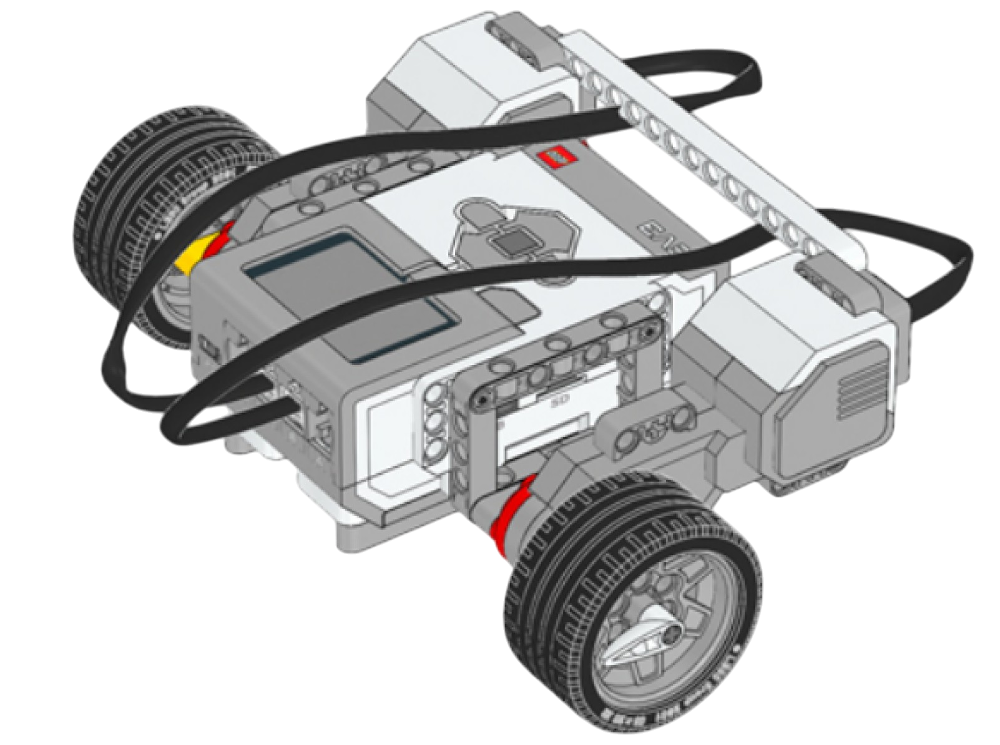
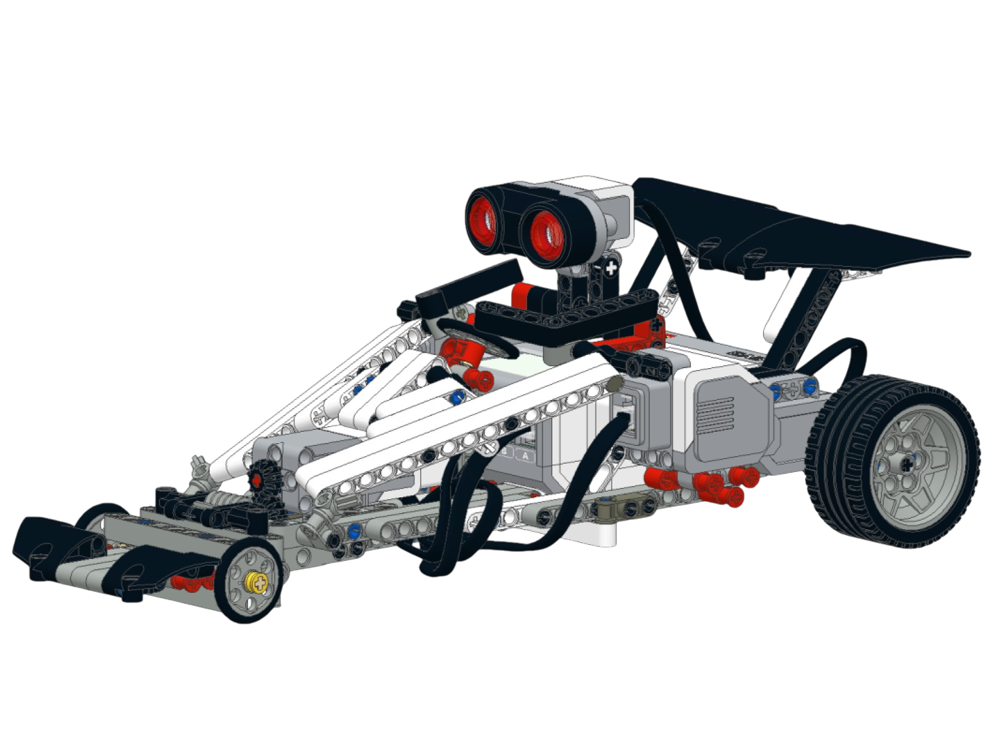
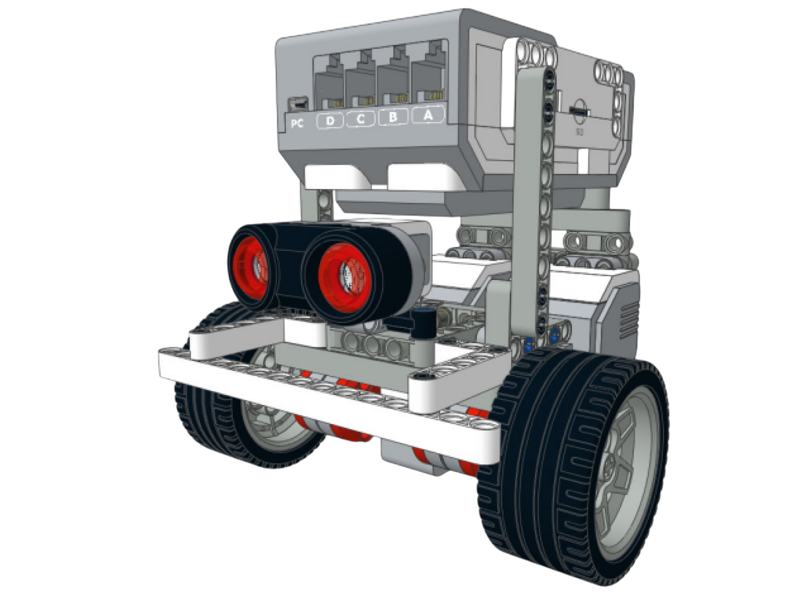
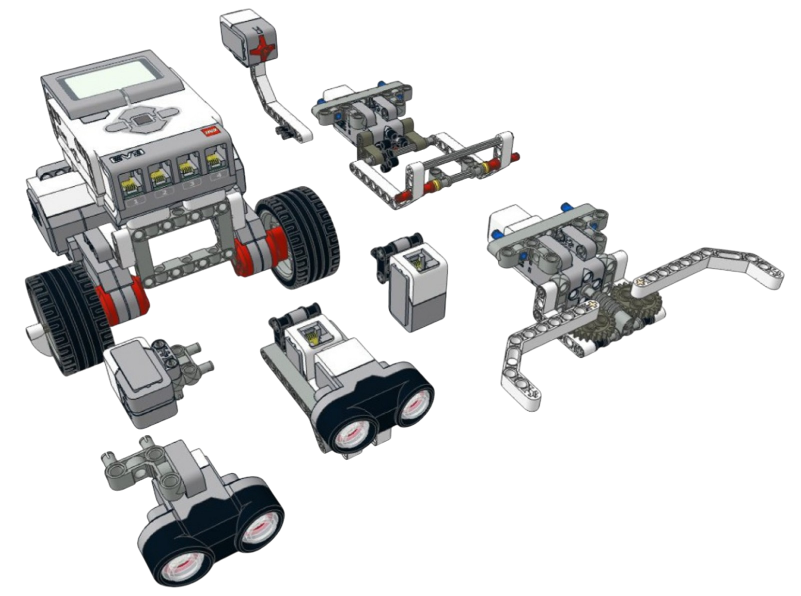
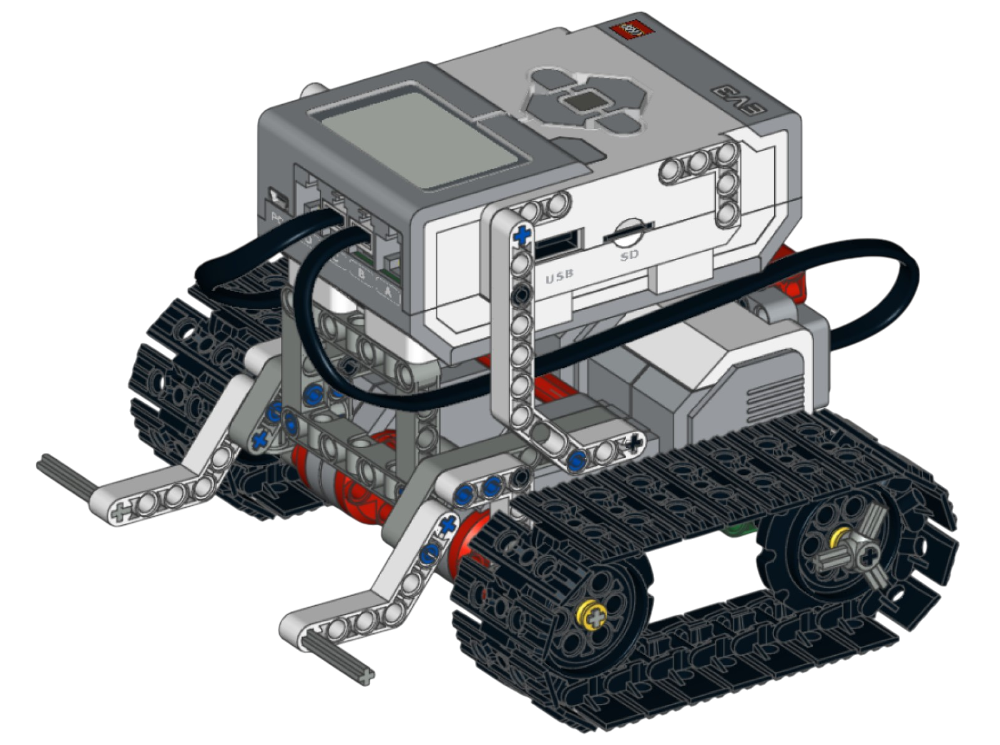
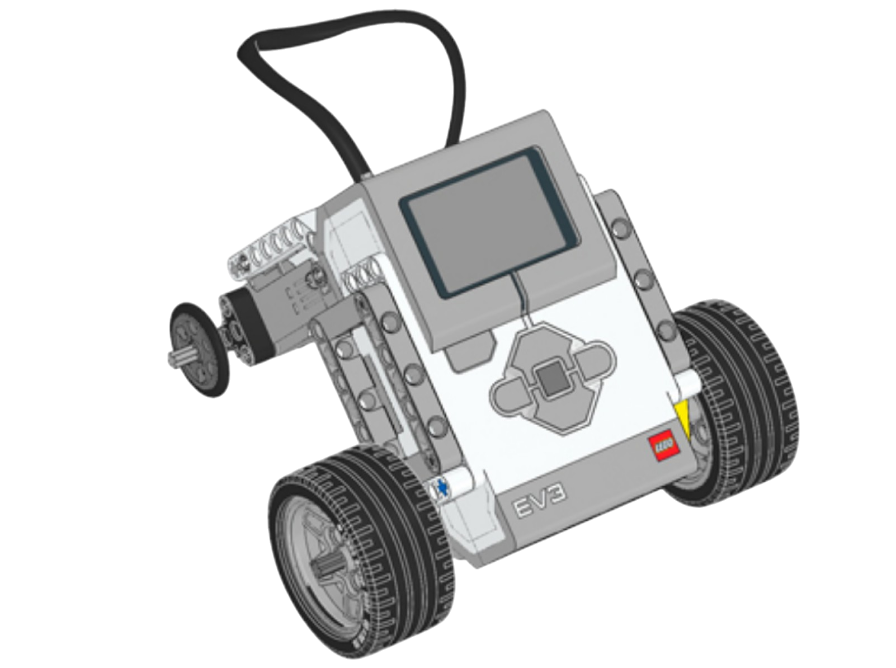

Создание базовых моделей роботов
Теоретический блок
Что такое базовая модель робота
Базовая модель робота — это простая робототехническая конструкция, которая используется как основа для дальнейшего изучения робототехники. Обычно такая модель включает корпус, программируемый блок, моторы, колёса и соединительные элементы.
На базовой модели обучающиеся могут изучать основные принципы сборки робота, проверять устойчивость конструкции, подключать моторы и выполнять первые программы движения. В дальнейшем к такой модели можно добавлять датчики и дополнительные механизмы.
Создание базовой модели является важным этапом обучения, потому что именно с неё начинается понимание того, как отдельные детали конструктора соединяются в единую работающую систему.
Основные элементы базовой модели
Программируемый блок EV3
Главный элемент робота. Он выполняет программу, управляет моторами и получает данные от подключённых датчиков.
Моторы
Моторы приводят робота в движение. В базовых моделях чаще всего используются два больших мотора, которые управляют левым и правым колесом.
Колёса
Колёса обеспечивают перемещение робота по поверхности. Для ровного движения важно, чтобы они были закреплены одинаково и симметрично.
Соединительные элементы
Балки, оси, штифты и другие детали используются для создания корпуса и крепления всех частей модели между собой.
Какие требования предъявляются к базовой модели
При сборке робота важно учитывать не только внешний вид, но и качество конструкции. Если модель собрана непрочно или несимметрично, робот может двигаться неровно, терять детали или переворачиваться при выполнении программы.
Главные требования к модели
Пример
Если один мотор установлен выше другого или колёса закреплены не одинаково, робот может ехать не прямо, а отклоняться в сторону. Поэтому перед программированием важно проверить конструкцию и убедиться, что все элементы установлены правильно.
Почему важно начинать с простой модели
Простая модель позволяет сосредоточиться на главном: понять устройство робота, научиться читать инструкцию, правильно соединять детали и проверять результат сборки. После этого обучающимся легче переходить к более сложным моделям, где используются датчики, механизмы и дополнительные конструкции.
Базовая модель также удобна для первых программ. На ней можно отработать движение вперёд и назад, повороты, остановку, изменение скорости и движение по заданному времени.
Элементы робота и их назначение
| Элемент | Назначение | На что обратить внимание |
|---|---|---|
| Блок EV3 | Выполняет программу и управляет роботом | Должен быть прочно закреплён |
| Моторы | Приводят модель в движение | Желательно устанавливать симметрично |
| Колёса | Обеспечивают перемещение робота | Должны свободно вращаться |
| Опорный элемент | Помогает сохранять равновесие | Не должен мешать движению |
| Кабели | Соединяют моторы и датчики с блоком EV3 | Не должны попадать под колёса |
Проверь себя: что важно при сборке?
Нажмите на ситуацию, чтобы увидеть пояснение.
Нужно проверить, одинаково ли установлены колёса, симметрично ли закреплены моторы и правильно ли они подключены к портам.
Возможно, конструкция неустойчива или центр тяжести расположен слишком высоко. Нужно проверить расположение блока EV3 и опорных элементов.
Нужно убедиться, что детали корпуса не мешают вращению колёс, а оси установлены правильно.
Практический блок
Практическая часть занятия направлена на сборку простой модели робота и проверку её готовности к дальнейшему программированию. Основная задача обучающихся — собрать модель по инструкции, проверить её устойчивость и выполнить первое движение.
Задание 1. Подготовка деталей
Цель: научиться находить основные детали конструктора, необходимые для сборки базовой модели робота.
Перед началом сборки подготовьте детали и проверьте, что все необходимые элементы находятся на рабочем месте.
- Найдите программируемый блок EV3.
- Подготовьте два больших мотора.
- Подберите два колеса одинакового размера.
- Найдите опорное колесо или шаровую опору.
- Подготовьте балки, оси, штифты и соединители.
- Проверьте наличие кабелей для подключения моторов.
Подсказка: детали лучше разложить по группам: моторы, колёса, соединители, балки и кабели. Так будет проще работать по инструкции.
Задание 2. Сборка базовой модели
Цель: собрать простую модель робота по инструкции и понять, из каких элементов состоит базовая конструкция.
В качестве основной модели рекомендуется использовать инструкцию «Простой робот 6 в 1». Остальные инструкции можно использовать для дополнительной практики или самостоятельной работы.
- Откройте инструкцию «Простой робот 6 в 1».
- Соберите основу корпуса робота.
- Закрепите моторы на корпусе модели.
- Установите колёса и опорный элемент.
- Закрепите программируемый блок EV3.
- Подключите моторы к портам B и C.
- Проверьте прочность конструкции.
Подсказка: не торопитесь при сборке. После каждого крупного этапа проверяйте, плотно ли закреплены детали и не мешают ли они движению колёс.
Задание 3. Проверка конструкции
Цель: определить, готова ли собранная модель к программированию.
После завершения сборки проверьте модель по нескольким критериям. Робот должен устойчиво стоять на поверхности, а его колёса должны свободно вращаться.
- Проверьте, симметрично ли расположены моторы.
- Убедитесь, что колёса закреплены одинаково.
- Проверьте, не мешают ли детали вращению колёс.
- Убедитесь, что блок EV3 закреплён прочно.
- Проверьте, не попадают ли кабели под колёса.
- Поставьте робота на ровную поверхность и проверьте устойчивость.
Подсказка: если робот стоит неровно или заваливается, нужно проверить опорный элемент и расположение блока EV3.
Задание 4. Первое движение робота
Цель: проверить работу моторов и правильность подключения модели.
Создайте простую программу, в которой робот едет вперёд несколько секунд, а затем останавливается.
- Откройте среду программирования EV3.
- Создайте новую программу.
- Добавьте команду движения для моторов B и C.
- Установите движение вперёд на 2–3 секунды.
- Добавьте остановку моторов.
- Загрузите программу в блок EV3.
- Запустите программу и проверьте движение робота.
Подсказка: если робот едет назад, измените направление движения. Если робот поворачивает, проверьте подключение моторов к портам B и C.
Инструкции по сборке
В этом разделе размещены инструкции по сборке базовых и мобильных моделей LEGO MINDSTORMS EV3. Основной инструкцией для занятия является «Простой робот 6 в 1». Остальные модели можно использовать для дополнительной практики, самостоятельной работы или творческого задания.

Speed Bot
Тип модели: скоростная мобильная модель.
Назначение: проверка движения и скорости.
Модель можно использовать для экспериментов с движением, скоростью, временем работы моторов и устойчивостью конструкции.
Открыть инструкцию по сборке
Гоночная машина
Тип модели: колёсная модель.
Назначение: изучение движения и устойчивости конструкции.
Модель подходит для дополнительной практики, так как позволяет рассмотреть особенности сборки колёсной конструкции, работу моторов и движение по поверхности.
Открыть инструкцию по сборке
Маленький робот
Тип модели: компактная модель.
Назначение: самостоятельная работа обучающихся.
Компактная модель подходит для дополнительной практики и закрепления навыков сборки простых робототехнических конструкций.
Открыть инструкцию по сборке
Простой робот 6 в 1
Тип модели: базовая универсальная модель робота.
Назначение: знакомство с основными элементами конструкции.
Модель подходит для первого занятия по сборке, так как позволяет изучить корпус, моторы, колёса, программируемый блок и соединительные элементы.
Открыть инструкцию по сборке
Танк
Тип модели: мобильная модель повышенной устойчивости.
Назначение: изучение прочной подвижной конструкции.
Модель позволяет рассмотреть особенности сборки устойчивого корпуса, работу моторов и движение робототехнической конструкции по поверхности.
Открыть инструкцию по сборке
Треугольный робот
Тип модели: альтернативная базовая конструкция.
Назначение: сравнение разных вариантов корпуса.
Модель помогает показать, что базовая конструкция робота может иметь разную форму, но при этом должна оставаться устойчивой, прочной и пригодной для движения.
Открыть инструкцию по сборкеВопросы для самопроверки
1. Что такое базовая модель робота?
Базовая модель робота — это простая конструкция, которая используется как основа для дальнейшего изучения робототехники, программирования и подключения датчиков.
2. Какие основные элементы входят в базовую модель робота?
В базовую модель входят программируемый блок EV3, моторы, колёса, соединительные элементы, опорный элемент и кабели.
3. Для чего нужен программируемый блок EV3?
Программируемый блок EV3 выполняет программу, управляет моторами и получает данные от подключённых датчиков.
4. Почему важно симметрично устанавливать моторы и колёса?
Если моторы и колёса расположены несимметрично, робот может ехать неровно или отклоняться в сторону.
5. Что нужно проверить после сборки модели?
Нужно проверить прочность конструкции, устойчивость робота, вращение колёс, крепление блока EV3 и правильность подключения моторов.
6. Почему кабели не должны попадать под колёса?
Если кабели попадут под колёса, они могут мешать движению робота или отсоединиться от блока EV3.
Итог занятия
В ходе занятия обучающиеся знакомятся с понятием базовой модели робота, изучают основные элементы конструкции LEGO MINDSTORMS EV3 и собирают простую модель по инструкции.
После выполнения практической части обучающиеся смогут определять основные детали робота, собирать базовую конструкцию, проверять её устойчивость и выполнять первое движение модели. Собранный робот может использоваться как основа для дальнейшего программирования и изучения работы датчиков.